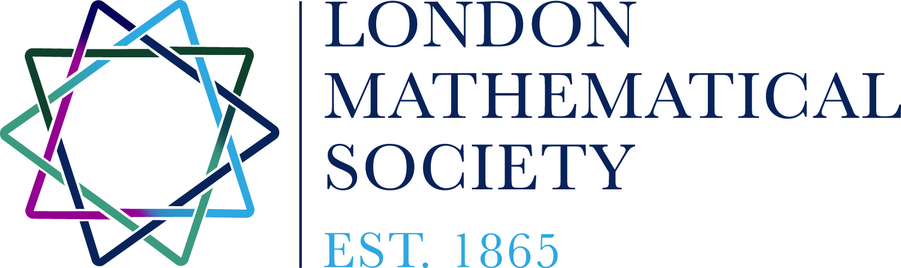

I hosted an LMS Northern Regional Meeting on Dynamical systems, ergodic theory and applications
in the University of Manchester on Thursday 23rd and Friday 24th of June 2016. The official
society half-day meeting was on the afternoon of Thursday 23rd.
The meeting was generously supported by the LMS.
Plenary speakers:
Julien Barral (Paris 13)
De-Jun Feng (Chinese University of Hong Kong)
Ian Melbourne (Warwick)
Sanju Velani (York)
The schedule was as follows:
Day 1 - Thursday 23rd of June (society meeting in the afternoon)
• 10.30am - 11.00am: short talk, Mike Todd (St Andrews): Sharp conditions for statistical stability.
Abstract
• 11.00am - 11.30am: short talk, Mark Holland (Exeter): Record Events in Dynamical Systems.
Abstract
• 11.30am - 12 noon: short talk, George Kenison (Warwick): Asymptotics for free group actions.
Abstract
• 12 noon - 1.20pm: Lunch break
• 1.20pm: Opening of the LMS Northern regional meeting
• 1.30pm - 2.30pm: Plenary talk, Sanju Velani (York): Diophantine approximation in Kleinian groups:
extremality and all that.
Abstract
• 2.30pm - 3.00pm: Coffee break.
• 3.00pm - 4.00pm: Plenary talk, Julien Barral (Paris 13): Projections of planar Mandelbrot measures.
Abstract
• 4.00pm - 5.00pm: Public lecture, Henna Koivusalo (York): A short history of aperiodic order -
from crystals to quasicrystals. Abstract
• 5.00pm: Drinks reception.
• 7pm: Dinner in EastZeast
Day 2 - Friday 24th of June
• 10.00am - 10.30am: short talk, Mark Pollicott (Warwick): Asymptotic escape rates for one dimensional maps.
Abstract
• 10.30am - 11.00am: short talk, Rhiannon Dougall (Warwick): Critical exponents for a family of normal subgroups,
Kazhdan distance and the spectrum of transfer operators.
Abstract
• 11.00am - 11.30am: short talk, Jimmy Tseng (Bristol): Applications of the Birkhoff ergodic theorem
and the Siegel mean value theorem to Diophantine approximation.
Abstract
• 11.30am - 12 noon: short talk, Nicholas Sharples (Middlesex): Equi-homogeneity,
Assouad dimension and non-autonomous dynamics.
Abstract
• 12 noon - 1.30pm: Lunch break
• 1.30pm - 2.00pm: short talk, Demi Allen (York): A Mass Transference Principle for systems
of linear forms with applications to Diophantine approximation.
Abstract
• 2.00pm - 2.30pm: short talk, Nikita Sidorov (Manchester): Self-affine sets: topology and arithmetic.
Abstract
• 2.30pm - 3.30pm: Plenary talk, Ian Melbourne (Warwick): The Lorenz attractor is exponentially mixing.
Abstract
• 3.30pm - 4.00pm: Coffee break.
• 4.00pm - 5.00pm: Plenary talk, De-Jun Feng (Chinese University of Hong Kong): Dimension of stationary measures
for affine iterated function systems. Abstract
The poster
Some photos from the event
Home
|

|